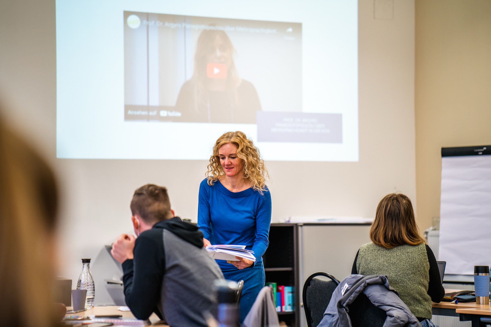
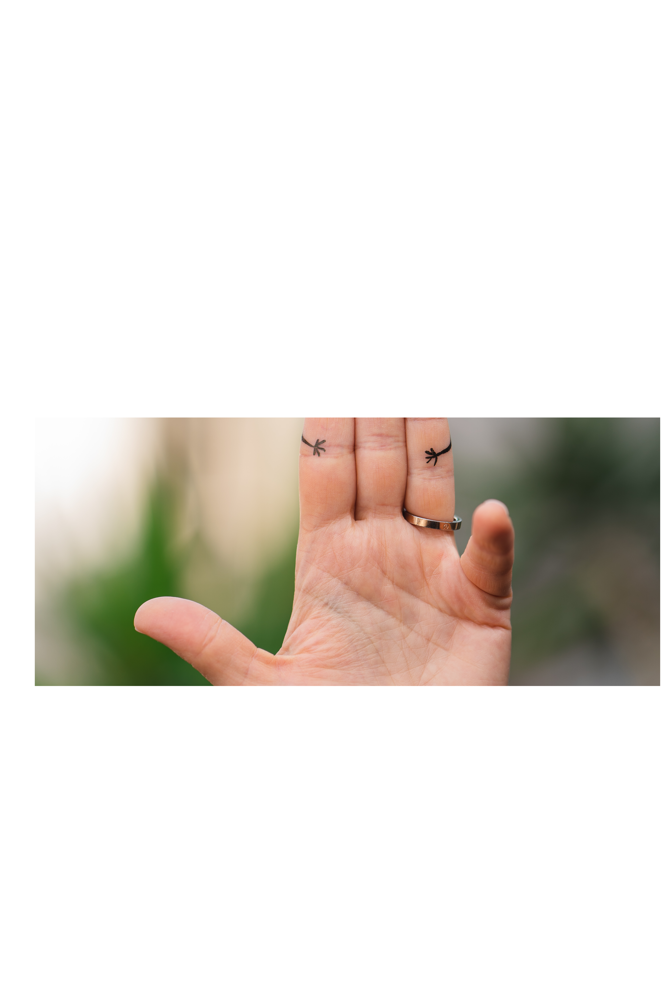
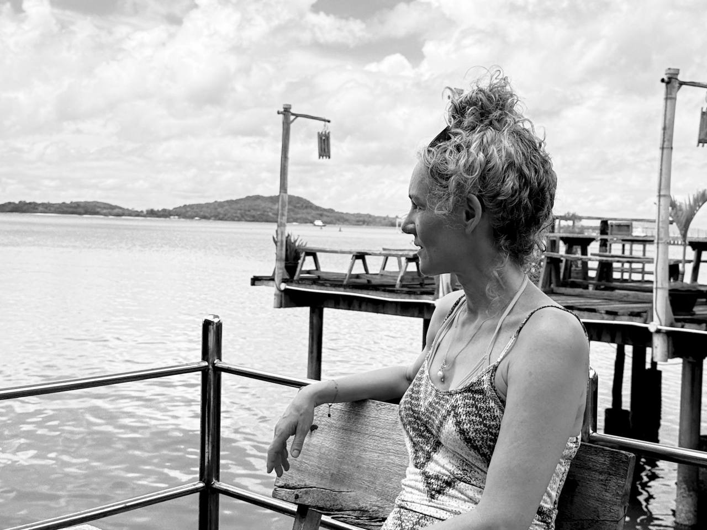
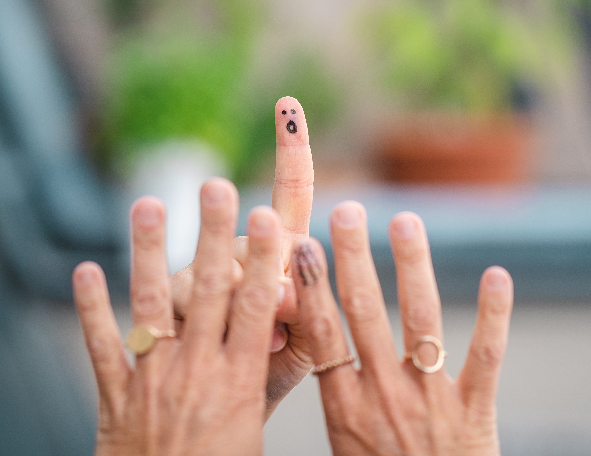

Wissenschaftlich fundiert. Menschlich nah. Nachhaltig wirksam.
Ich gebe Orientierung und wirksame Handlungsstrategien, damit echte Verbindung entsteht: in Fortbildungen, im Stimm- und Kommunikationscoaching sowie in der Begleitung von Kindern und Familien.
„Kommunikation ist dann erfolgreich, wenn Menschen sich auf den Augenblick einlassen."
Dr. Stephanie Kurtenbach„Immer mehr Kinder können sich nicht auf meine Methoden einlassen. Wie kann ich ursachenorientierter, erfolgreicher, mit mehr Freude arbeiten?"
„Meine Stimme trägt mich nicht. Ich bin unsicher und habe Angst vor dem Sprechen vor Gruppen."
Individuelle Begleitung für Menschen mit Sprecherberufen.
„Keiner weiß, was wirklich hinter den Problemen unseres Kindes steckt. Wir sind ratlos, und die Therapie kommt nicht voran."
Ursachen verstehen. Ressourcen stärken. Wege finden.
In meiner Arbeit begegne ich Menschen auf Augenhöhe und schaffe einen vertrauensvollen Rahmen, in dem kommunikative Entwicklung entstehen kann.

Wissenschaftlich fundierte, praxisnahe Kurse zu Sensorischer Integration, frühkindlichen Reflexen, Dialogtherapie und Elterntraining, online und in Präsenz.
Alle Kurse ansehen
Individuelle Begleitung für Menschen mit Sprecherberufen: Tragfähigkeit, Sicherheit und Wirkung in der Kommunikation, nachhaltig entwickeln.
Mehr erfahren Anfrage stellen →
Befundung, Beratung und Entwicklungsbegleitung mit dem Ziel, die Ursachen zu verstehen und Kinder in ihrer Selbstwirksamkeit zu stärken.
Mehr erfahren Kontakt aufnehmen →Praxiserprobte Arbeitshilfen aus meiner täglichen Arbeit. Direkt einsetzbar.
Alle Kurse werden durch authentische Videobeispiele ergänzt und in praxisnahen Übungen vertieft.
„Ein Kind kann sich kaum auf sprachliche Angebote einlassen, wirkt ständig in Bewegung oder verliert schnell die Aufmerksamkeit. Trotz sorgfältiger Therapieplanung greifen bewährte Methoden nicht wie erwartet, und die Arbeit am Tisch wird für alle Beteiligten zunehmend anstrengend. Häufig liegen den sprachlichen Schwierigkeiten weitere Entwicklungsprozesse zugrunde, die auf den ersten Blick nicht erkennbar sind. Das Konzept der Sensorischen Integration hilft dabei, diese Zusammenhänge besser zu verstehen."
Kursinhalte„Suchst du nach einer strukturierten Möglichkeit, Eltern aktiv in die Sprachförderung einzubeziehen? Im Mittelpunkt steht die Vermittlung alltagsnaher Sprachlehrstrategien, die Eltern gezielt in der Kommunikation mit ihrem Kind einsetzen können, um dessen Sprachentwicklung wirksam zu unterstützen."
Du erhältst alle Materialien„Hast du auch immer öfter Kinder in der Praxis, bei denen die gängigen Methoden nicht funktionieren? Vielleicht liegt es daran, dass diese Kinder noch nicht in der Lage sind, Sprache zu erwerben, weil bei ihnen ein wichtiges Fundament fehlt: die kommunikativen Vorausläuferfähigkeiten."
Kursaufbau„Frühkindliche Reflexe sind genetisch angelegte Bewegungsmuster und bilden eine wichtige Grundlage für Haltung, Bewegung, Wahrnehmung, Lernen und Kommunikation. Verläuft der Integrationsprozess nicht vollständig, können Restreaktionen bestehen bleiben und verschiedene Entwicklungsbereiche beeinflussen, darunter Aufmerksamkeit, Motorik, Koordination, emotionale Regulation und Sprachentwicklung."
KursinhalteWissenschaftlich fundiert. Praxisnah. Sofort umsetzbar.
Online-Stimmtraining für Coaches, Trainer, Speaker & Business Professionals
Deine Stimme ist dein wichtigstes Business-Tool. Sie entscheidet, wie kompetent und präsent du wirkst.
Du bist unzufrieden mit deiner Stimme.
Du wirkst unsicherer, als du möchtest.
Du hast Lampenfieber.
Deine Stimme ermüdet schnell.
Heiser nach langen Workshops.
Du möchtest souveräner auftreten.
Das lässt sich ändern.
„Eine Stimme, die gesund, tragfähig und authentisch klingt, und eine Sprechweise, die deiner Kompetenz Ausdruck verleiht."
Standort, Ziele und verborgene Potenziale deiner Stimme.
Voller klingen, mit weniger Anstrengung mehr Wirkung.
Heiserkeit vorbeugen. Ökonomischer Einsatz. Mehr Ausdauer.
Kernaussagen auf den Punkt. Aufmerksamkeit gewinnen und halten.
5-Min-Warm-up, Übungen und Strategien für eine dauerhaft kraftvolle, gesunde Stimme.
Mehr Sicherheit, Präsenz, Resonanz und Wirkung. Eine Stimme, die Menschen erreicht.
Für Coaches, Trainer, Speaker & Business Professionals.
Was mich inspiriert und erfüllt, sind meine Familie und meine Freunde, Begegnungen mit Menschen, auf Reisen und in der Natur zu sein, gutes Essen, tiefe Gespräche und Yoga.
In meiner Arbeit begegne ich Menschen auf Augenhöhe. Mit meinen Lernpraktiken möchte ich tiefe Veränderungsprozesse ankurbeln: nicht durch das Vermitteln von Fertigkeiten, sondern durch das Verankern grundlegender Überzeugungen und das Herausarbeiten von Ressourcen.
Seit mehr als 30 Jahren begleite ich Kinder, Familien, Fachkräfte und Berufssprecher*innen. Meine Arbeit beginnt beim Verstehen der Ursachen und der Bedingungen, die echte Entwicklung ermöglichen.


Phonetik, Rhetorik, Klinische Sprechwissenschaft, Sprechbildung. Das Studium in Halle war breit und trotzdem präzise. Es hat mir beigebracht, genau hinzuhören: auf Stimme, Sprechweise, den Raum zwischen Sprechen und Verstehen. Und es hat meine Neugier für das geweckt, was hinter kommunikativen Schwierigkeiten steckt.

Diese Ausbildung hat verändert, wie ich Kinder wahrnehme. Nicht: Was kann das Kind noch nicht? Sondern: Was braucht es, um sich zu entfalten? Therapie, die sich das Kind holt, nicht die, die man ihm gibt.

Systemisches Denken bedeutet: kein Mensch ist sein Problem. Diese Haltung trägt mich: in Fortbildungen, in Beratungen, in jedem Gespräch. Sie verändert, wie man zuhört. Und wie man antwortet.

Manche Schwierigkeiten haben Wurzeln, die weit früher liegen als gedacht. Diese Methode hat mir gezeigt, wie tief Entwicklung reicht, und dass es sich immer lohnt, weiter zu fragen.
„Jenseits von richtig und falsch liegt ein Ort. Dort treffen wir uns."
Dschalāl ad-Dīn Muhammad RūmīJede Begegnung, ob mit Kindern, Eltern oder Fachkräften, entsteht aus echtem Respekt und der Überzeugung, dass jeder Mensch seine eigenen Ressourcen hat.
Symptome zeigen, was sichtbar ist. Was wirklich zählt, liegt tiefer. Meine Arbeit beginnt immer mit dem Verstehen, bevor Handlungsstrategien folgen.
Das Ziel ist nie Abhängigkeit, sondern dass Menschen, Kinder und Familien in die Lage kommen, ihre eigene Entwicklung aktiv zu gestalten.
„Wenn ich könnte, würde ich 10 Sterne vergeben. Die Atmosphäre war sehr persönlich und angenehm, der Inhalt wurde super anschaulich vermittelt und Fragen immer beantwortet. Man bekommt einen ganz neuen Blick auf die Kinder."
Kursteilnehmerin„Stephanie hat mit so viel Leidenschaft die Inhalte übermittelt, sodass man direkt angesteckt wurde, es selbst auszuprobieren."
Kursteilnehmerin · Fortbildung SI
„Ich war total begeistert, angeregt und habe extrem viel gelernt. Vielen Dank!"
Kursteilnehmerin · Kindersprachtherapie
„Super praxisnah, ich kann die Ideen gleich im Alltag umsetzen. Die besondere fachliche Kompetenz und Kommunikationsform der Dozentin haben mich beeindruckt."
Logopädin · Weiterbildung
„Wie sehr es mir die Augen in Bezug auf einige Therapiekinder geöffnet hat. Das war der wertvollste Moment der Fortbildung."
Kursteilnehmerin
„Gut strukturiert, ausgewogenes Verhältnis von Theorie und Praxis. Spannende Videos, tolle Fallbesprechungen, und immer auf alle Fragen eingegangen."
Kursteilnehmerin · Online-Seminar
„Das Charisma von Stephanie Kurtenbach. Sehr viel Erfahrung, und trotzdem ganz nah bei den Teilnehmenden."
Kursteilnehmer*in
Ich freue mich auf deine Nachricht. Ob Kursanmeldung, Coaching-Anfrage oder Fragen zur Familienbegleitung: nimm gerne Kontakt auf.
Lust auf ein erstes Beratungsgespräch? Kostenlos, schreib an hallo@stephaniekurtenbach.com